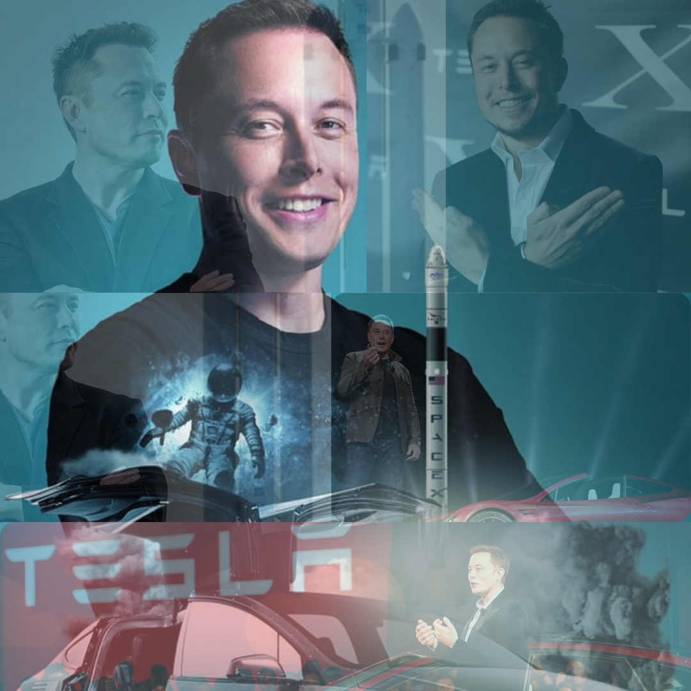

"I think life on Earth must be about more than just solving problems....It's got to be something inspiring,even if it is vicarious"

BIOGRAPHY
Elon Musk, born on June 28, 1971, in Pretoria, South Africa, is a renowned entrepreneur and business magnate. He showed an early talent for technology and entrepreneurship, creating and selling a video game at age 12. Musk moved to the United States to attend the University of Pennsylvania, where he earned degrees in physics and economics.
Musk's entrepreneurial journey began with Zip2, a city guide software company he co-founded with his brother Kimbal. Zip2 was sold to Compaq for nearly $300 million in 1999. He then founded X.com, an online payment company that eventually became PayPal. eBay acquired PayPal for $1.5 billion in stock in 2002.
In 2002, Musk founded SpaceX with the goal of reducing space transportation costs to enable the colonization of Mars. SpaceX has achieved numerous milestones, including the first privately funded spacecraft to reach orbit and the first private company to send a spacecraft to the International Space Station.
Musk joined Tesla, Inc. in 2004, shortly after its founding, and became instrumental in its growth into a leading electric vehicle and clean energy company. Tesla popularized electric cars with models such as the Model S, Model 3, Model X, and Model Y, and expanded into solar energy and battery storage.
Musk's ventures extend beyond SpaceX and Tesla. He co-founded Neuralink in 2016 to develop brain-computer interface technology, and The Boring Company to create underground transportation systems to alleviate urban traffic. He was also a co-founder of SolarCity, a solar energy services company that merged with Tesla, and OpenAI, an organization focused on artificial intelligence research.
Elon Musk is known for his ambitious vision of the future, including plans to colonize Mars, advance sustainable energy, and integrate AI with the human brain. His innovative approach and relentless drive have made him one of the most influential and controversial figures in technology and business today.
Early Ventures:
Zip2:Online city guide software (sold for $307 million) X.com:Online payments company (became PayPal) SpaceX:First private company to send a spacecraft to the International Space Station (2012)
Developed the Falcon and Starship rockets Tesla, Inc.:Popularized electric cars with models like the Model S, Model 3, Model X, and Model Y expanded into solar energy and battery storage SolarCity:Solar energy services company (merged with Tesla) OpenAI:Co-founder, research in artificial intelligence Neuralink:Developing brain-computer interface technology The Boring Company:Founder (2019)